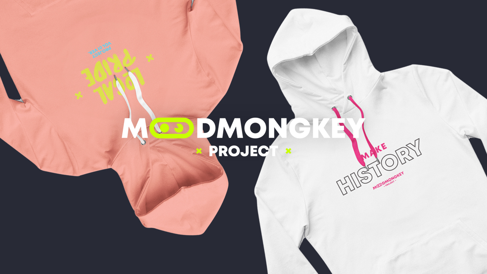

<headline/>
Mood Mongkey Project
// Project Breakdown

Mood Mongkey adalah sebuah usaha asal Indonesia yang bergerak di bidang fashion khususnya untuk pakaian pria. Mereka menginginkan produk yang berbeda dari merk lain dan harus dibuat lebih menarik.
<tagline>
Made
Without
Drama
<tagline/>
Latar belakang
Melihat peluang usaha yang tinggi di Kota Banjarmasin dan semakin berkembangnya serta semakin tingginya kebutuhan masyarakat terhadap fashion.
Hingga saat ini sedikit demi sedikit usaha yang bergerak di bidanng fashion ini mulai bertambah di Kota Banjarmasin. Hal itu dikarenakan masyarakat yang mempunyai pola piker yang sudah maju dan modern dalam dunia fashion.
Katalog


Visi dan Misi
Menghasilkan produk yang terlihat sangat unik dan beda dari yang lain agar menarik atensi pembeli dengan metode serba digital.
Tujuan usaha
- Memperkenalkan dunia fashion lewat usaha baju
- Menyediakan kebutuhan fashion bagi masyarakat
- Memberikan produk yang terbaru mengenai fashion masa kini
- Mendapatkan laba/keuntungan
Aplikasi
- Adobe Illustrator
- Adobe Photoshop